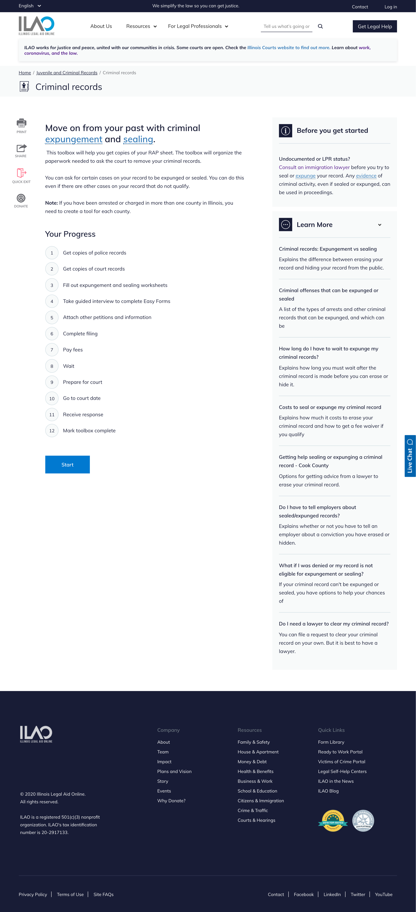
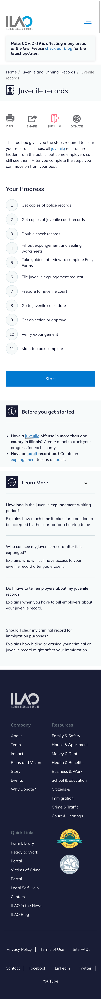

Toolbox tool content type¶
Every toolbox should have at least 2 tools. Each tool must have at least 1 step.
Todo
Explore the possibility of supporting tools that do not reside inside a toolbox.
Creating or editing a tool¶
When creating a tool, add:
- A title
- A relationship to an existing toolbox
- A content description. This is used throughout the website.
- A primary legal category
- A selector form label; this will appear on the toolbox page
- An effort level. Use easy for anything that can be completed in 1 week or less, medium for anything that takes 1-6 months and hard for anything that typically takes 6 months or more.
- Purpose description. This appears on the page after a user selects toolboxes.
- Overview. This is a summary of the tool and appears above the list of steps
- Optionally add a before you get started block to add any critical warnings or other information the user should have before starting
- Optionally add a Learn more section. This can use an existing guide or be hand-curated.
- Add each tool step in the tools list (these can not be added until the tool steps exist)
What users see¶
When viewing a tool page a user will see:
- The overview
- The list of steps, numbered under a “Your Progress” block
- A start button to go to the next step
- Before you get started block with an information icon
- A learn more block with a … icon if a learn more block is provided
Desktop:
Mobile:
{kind=link}